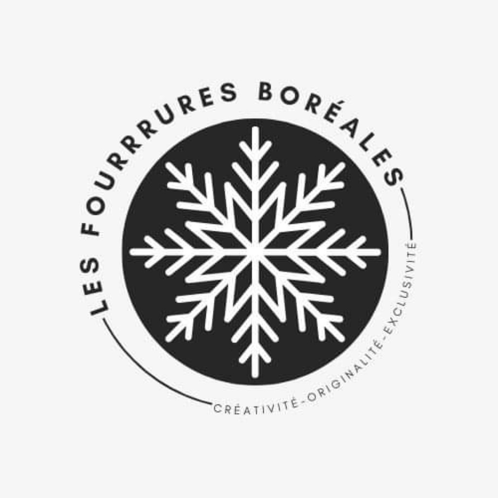
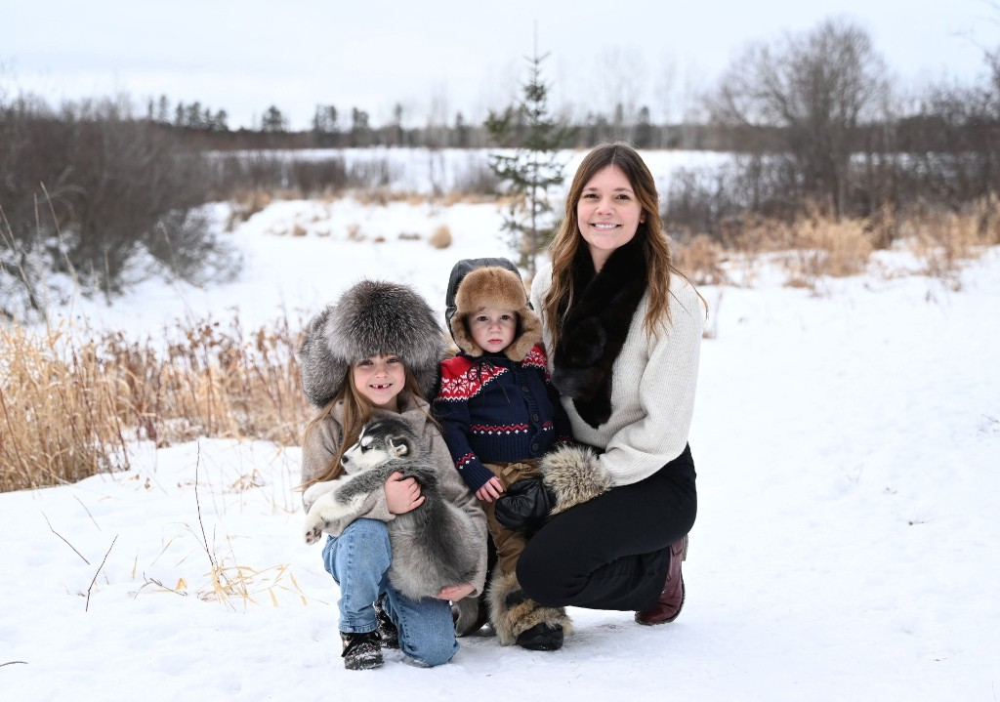
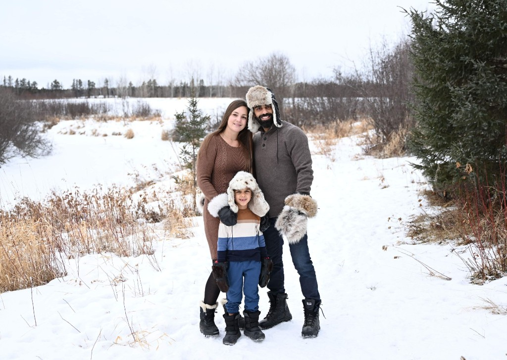
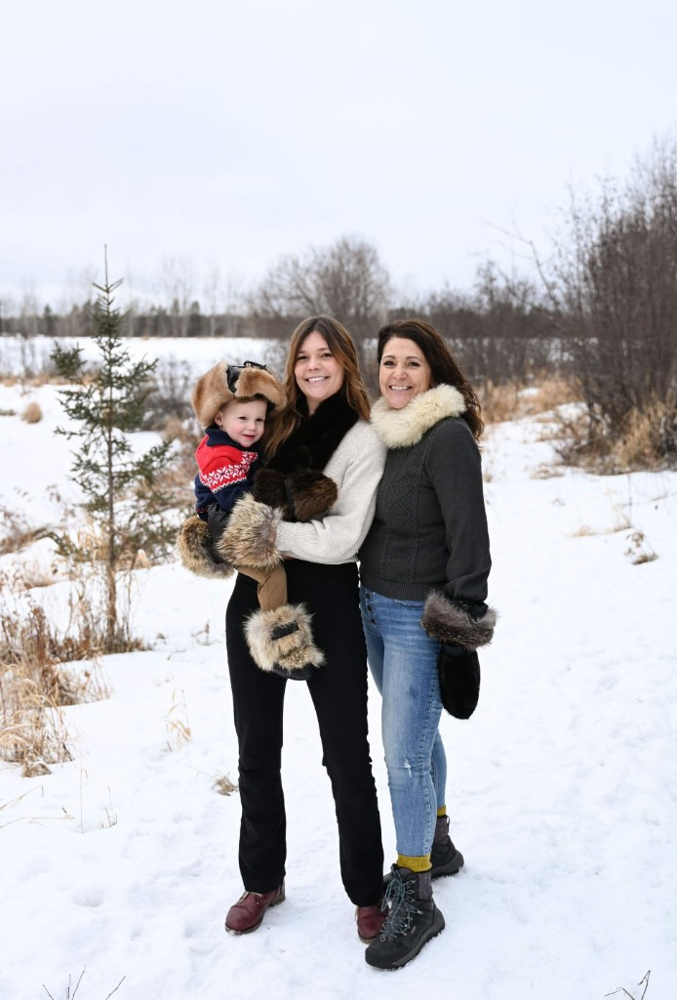
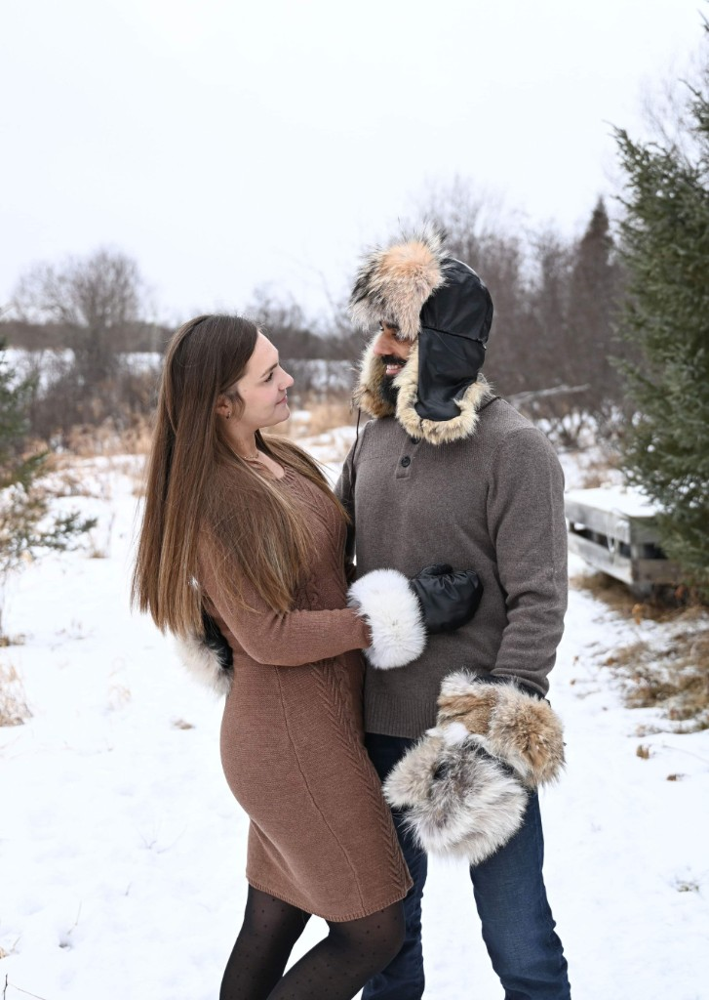
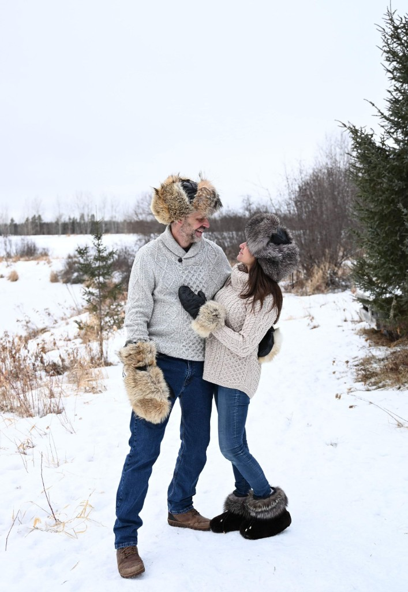

Chapeaux
Photos des créations à venir

LES FOURRURES BORÉALESCRÉATIVITÉ · ORIGINALITÉ · EXCLUSIVITÉ
Des créations artisanales imaginées pour traverser les saisons avec caractère et élégance.
Découvrir les créations ↗
LES FOURRURES BORÉALES
01 / NOTRE UNIVERS
Les Fourrures boréales mettent à l’honneur la créativité, l’originalité et l’exclusivité à travers des accessoires confectionnés avec soin. L'atelier travaille notamment la fourrure recyclée et la peau de mouton.
Les détails de l’histoire de Lucie seront ajoutés avec elle.
02 / COLLECTIONS
Explorez nos catégories. Les photographies des produits seront ajoutées prochainement.
Photos des créations à venir
Photos des créations à venir
Photos des créations à venir
Photos des créations à venir
Photos des créations à venir
Photos des créations à venir
Photos des créations à venir
Photos des créations à venir
03 / EN SITUATION
Découvrez l’allure de nos créations dans la vie de tous les jours.




04 / CONTACT